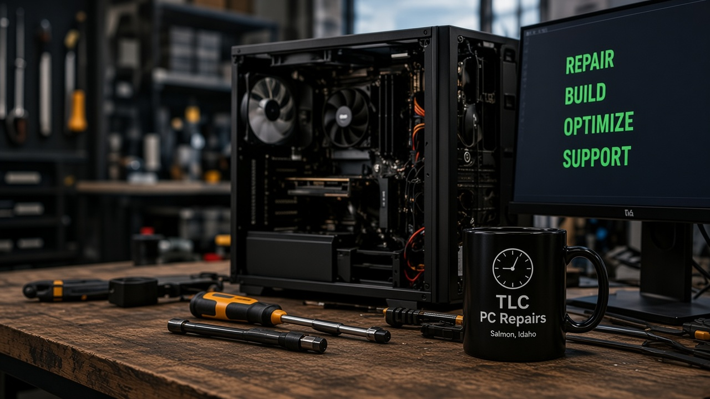

Salmon River Country · Websites & computers
Websites and
computer repair in Salmon.
TLC builds websites, repairs computers and laptops, and helps keep you connected. From local businesses to home users: honest service, clear answers, and a price before work starts. No tech jargon — just help that works.
- Fast, friendly service
- Local & trusted
- No geek speak

-
Computer Repair
Desktops, hardware upgrades, virus removal, and more.
-
Website Design
Simple, effective websites for local businesses and individuals.
-
Laptop Services
Screen replacements, battery issues, tune-ups and diagnostics.
-
Local & Personal
Straight answers from someone in Salmon who actually cares.
Let’s get you back online
Call, text, or stop by.
Have a question? Need a repair? Want a website? I’ll answer back as soon as I can. Tell me what’s going on and I’ll let you know what your options are — no pressure.
(406) 369-0838 Call or text anytime
Mon–Fri, 8am–7pm Saturday off · Sunday by appointment
Salmon, ID 83467 Lemhi & Custer counties. A hundred miles from Salmon isn’t a problem.
TLC PC Repairs Salmon River Country
Work you can click on
Recent Websites
Live sites for local businesses. Clean, mobile-friendly, and built to work.
-
Richie Outfitters Idaho Big Game Hunting
Richie Outfitters
Idaho Big Game Hunting
View Website -
TLC PC Repairs
Websites & computers
View Website -
Local business samples
Services, info, and contact
View Website
What it costs, without a surprise bill
Computer work is billed by the hour. Website work is a set scope before we start. Parts are quoted before we order them.
-
Bench repair
$45/hour
Bring your computer to me, or meet me in town.
-
On-site service
$55/hour
House calls and business service within 20 miles of Salmon. One-hour minimum for on-site service.
-
Travel beyond 20 miles
$0.50/mile
The first 20 miles are included with on-site service. Farther away, additional travel is billed at $0.50 per mile, round trip, beyond the included service area. I’ll drive up to 100 miles from Salmon.
I don’t mind the travel, and a hundred miles from Salmon isn’t a problem. That covers computer repair, networking, Wi-Fi, printers, Starlink, and small-business technology needs.
Call or text and I’ll give you an estimate of the service and travel cost.
Website work is a set scope before we start. Computer work depends on the machine. What you always get is the same process:
- You call or text what you need — a site, a PC, or a laptop.
- We tell you what a first website includes, or we look at the machine and explain it in plain English.
- You get a price before any work starts. Parts are quoted before we order them.
- If a new computer would be cheaper than a repair, we will say so.
How we work
- Call or text Tell us about the website, computer, or laptop. We will meet you or drive to you.
- Scope or diagnosis For a site, you get a written list of pages and a price. For a machine, we look at it first. No work starts without your OK.
- Build or fix You see the site before it goes live, or we show you what changed on the computer and how to keep it working.
Salmon shops, close to home
This is a small shop for a small town. TLC PC Repairs is local website design and computer service for Salmon, Lemhi County, and Custer County. We meet you or come to you. I don’t mind the travel — a hundred miles from Salmon isn’t a problem.
If you searched for website building, Salmon computers, computer repair, or laptop repair, you are in the right place. If you are in North Fork, Leadore, Tendoy, Carmen, Gibbonsville, or Challis, or farther out, call ahead and we will set a time.
- Salmon
- North Fork
- Leadore
- Tendoy
- Carmen
- Gibbonsville
- Lemhi
- Challis
- Lemhi County
- Custer County
Questions people ask before they call
Short answers. If yours is not here, call or text anyway.
Can you build a website for my shop?
Yes. Website design is for Salmon-area businesses that need a real site: hours, phone, services, and a page people can find. Live work includes Richie Outfitters. You get a scope and a price before work starts.
Do I have to bring the computer to a store?
No. We can meet you or drive to your location. I don’t mind the travel — a hundred miles from Salmon isn’t a problem. Call or text a time that works.
Will I know the price before you start?
Yes. Bench repair is $45/hour if you bring the computer in or we meet in town. On-site is $55/hour within 20 miles of Salmon, one-hour minimum. Travel past 20 miles is $0.50/mile round trip. I don’t mind the travel — a hundred miles from Salmon isn’t a problem. Call or text and I’ll estimate the service and travel. Website work is a written list of pages and a number. Parts are quoted before we order them.
How fast can you look at it?
Call or text a time that works. Hours are Monday–Friday, 8am–7pm. Saturday is off. Sunday is by appointment. Most computer jobs are days, not weeks. Website work is scoped up front.
What if it is not worth fixing?
We will say so. Repair first is the point, but a new computer is cheaper than throwing money at a dead one. You decide.
Need a website, or a computer fixed?
Call or text TLC PC Repairs. Say whether it is website work, a laptop tune-up, an upgrade, or a repair. We will set a time to meet or come to you.